¿Qué es un hemograma? ¿Qué indica cada cosa?
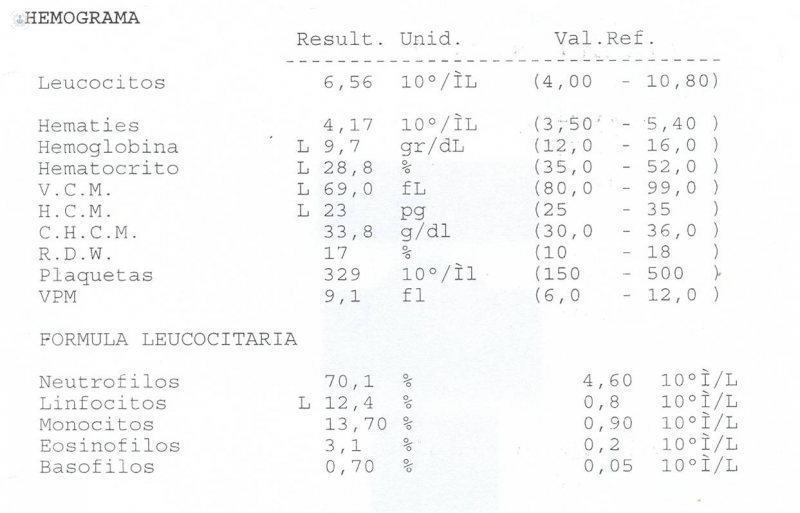Seguro que te suena haber visto una analítica como esta, ¿pero sabrías identificar cada parámetro?
Empezemos por los parámetros.
HEMATIES: se trata del recuento de glóbulos rojos en la sangre y su valor depende de varios factores, entre ellos, el sexo.
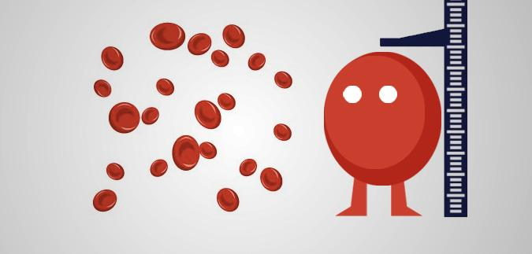Cuando hablamos de la mujer, el valor normal de glóbulos rojos es de entre 4,00 y 5,2 millones de células por cada μl. Mientras que en el hombre es de 4,52 a 5,9 millones de céluls por μl.
Qué pasas si tengo valores más altos o bajos.
En caso de tener una cantidad menor a la normal, tendras una bajada de defensas, mientras que si tienes una cantidad mayor a la normal, estaremos hablando de una policitemia, un tipo de cancer que provoca una abundante generación de glóbulos rojos que pueden provocar coágulos.
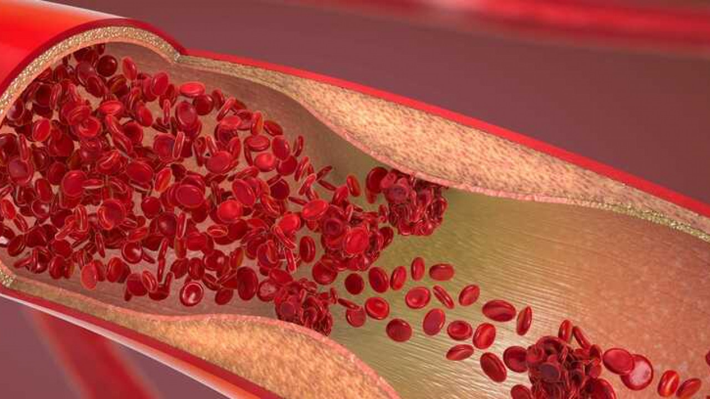Policitemia
HEMOGLOBINA
Es esa proteína que da el color rojo a la sangre, cumple con la función de llevar oxígeno de los pulmones al resto del cuerpo.
Entonces, ¿Cuándo tengo anemia?
Como hemos visto anteriormente, dependiendo del valor que tengas en sangre, estarás por debajo de lo normal o por encima. Siendo en mujeres un valor normal entre 12 y 15 g/dL y en hombres 14 y 17,5g/dL
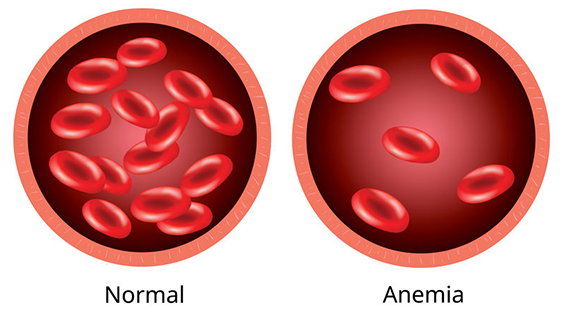Como se puede apreciar, tener una menor cantidad de hemoglobina es igual a anemia, mientras que una mayor cantidad, a un aumento de viscosidad.
HEMATOCRITO
Este parámetro nos indica el volumen de eritrocitos en porcentaje de la cantidad de sangre extraida total.
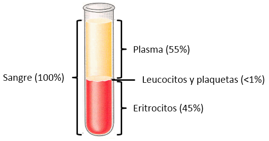Observa este ejemplo, donde a partir de una muestra, hay un porcentaje de cada tipo de célula en sangre. En hombres el valor normal es de 42 a 50% de eritrocitos, mientras que en las mujeres es de 36 a 45% de eritrocitos en sangre.
VCM o Volumen Corpuscular medio
Nos indican el tamaño de los glóbulos rojos,con unos valores normales de 80 a 100 fL. Si el valor está por debajo, se tratará de anemia y si es alto de una enfermedad hematológica.
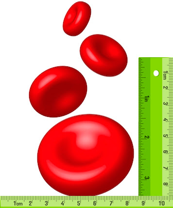HCM o Hemoglobina Corpuscular Media
Mide la cantidad de hemoglobina, la proteína que transporta oxígeno.Entonces sabemos que tener mayor cantidad de eritrocitos no significa más oxígeno.
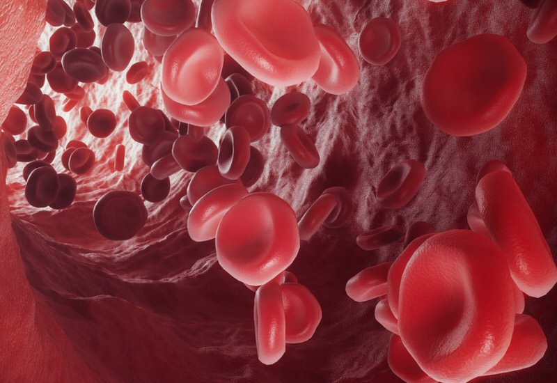El valor normal es entre 27 y 33,5 pg.
CHCM o Concentración de Hemoglobina Corpuscular Media
Nos relaciona la cantidad relativa de hemoglobina relativa al tamaño de la célula. Los valores normales son entre 31 y 36 g/dL.
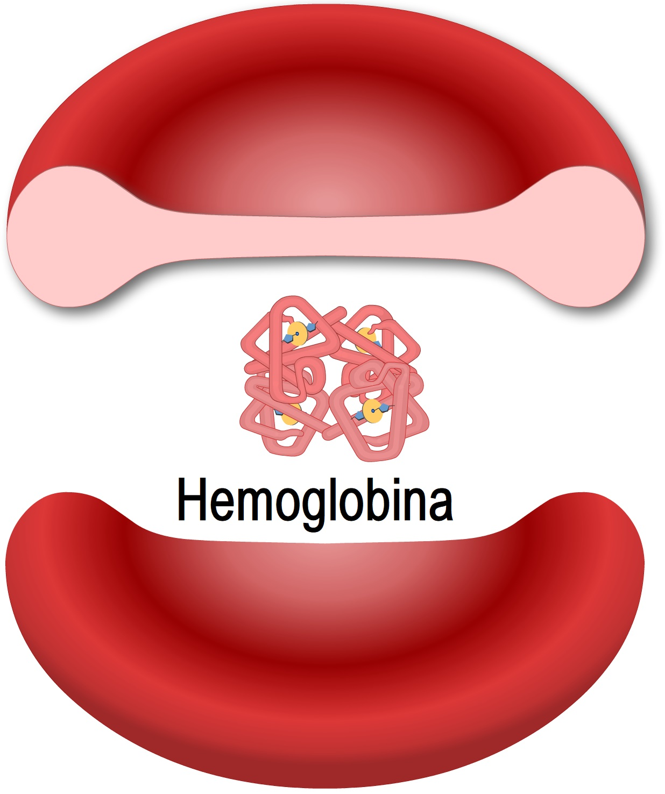En caso de tener valores bajos, se podría tratar de anemia ferropénica o talasemia homocigóticas.
VSG o Velocidad de sedimentación globular eritrocitaria
Se trata del tiempo que tardan las células sanguíneas en sedimentar.
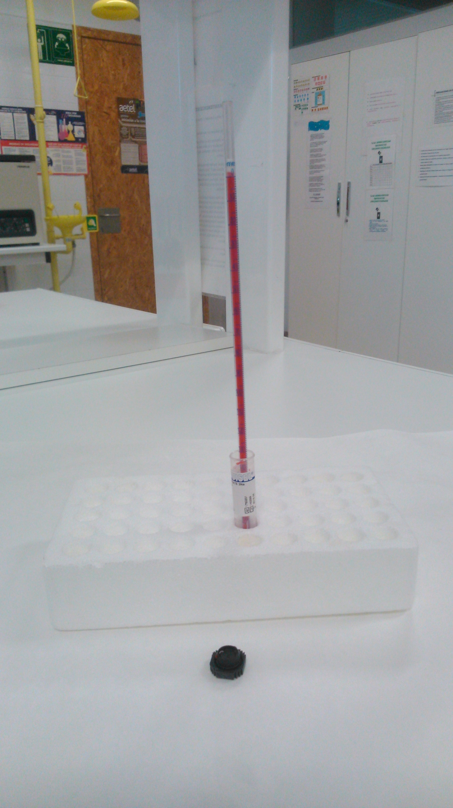A partir de esta prueba se puede determinar procesos inflamatorios propios por problemas autoinmunes o infecciones. En los hombres el valor normal es de <15mm/h y mujeres <20mm/h.
HEMOGRAMA EN LA SERIE BLANCA
En este caso, hablaremos de la Fórmula Leucocitaria
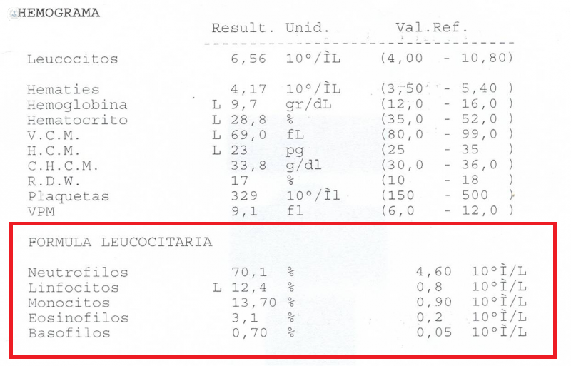Como puedes observar, trata de el porcentaje de cada célula blanca (anteriormente visto) en la sangre.
Valores normales:
Linfocitos:Entre 1200 y 3500 /μl, entre 20 y 50%
Neutrófilos:De 1800 a 7800/μl, entre 40 y 80%
Monocitos: Entre 100 y 1000 /μl, entre 2 y 11 %
Eosinófilos:<500 /μl, 0-5 %
Basófilos:<200 /μl, 0-2 %
¿Y si tengo menos?
Puede tratarse de:
Linfocitos
Anemia aplásica, Leucemia o Enfermedades autoinmunes.
Neutrófilos
Infecciones, Anemia,Cáncer u otras enfermedades de la médula ósea o Hiperesplenismo (destrucción células de sangre por el bazo).
Monocitos
Aumento de probabilidad de sufrir infecciones.
Eosinófilos
Enfermedades autoinmunes o Cáncer.
Basófilos
Hipertiroidismo (se producen más hormonas tiroideas que las que el cuerpo necesita) o Síndrome de Cushing (trastorno hormonal causado por exceso de cortisol).
SOLO QUEDAN LAS PLAQUETAS
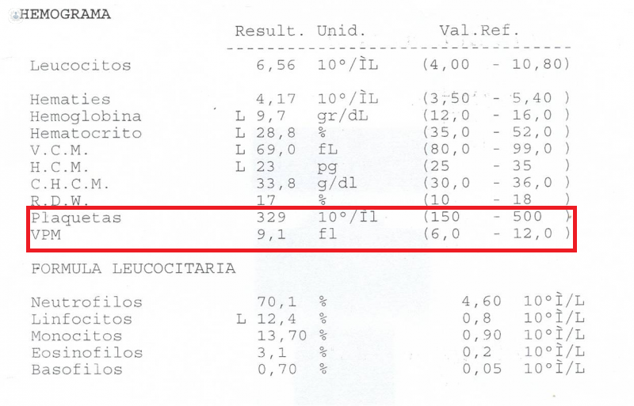Cuando hablamos de plaquetas, hay dos pruebas básicas para su estudio.
Recuento de plaquetas.
Se cuentan las plaquetas en sangre en número.
El valor normal es entre 140mil y 400mil /μl. Tener menos suele provocar problemas para coagular, por lo tanto, hemorragias menos controladas.Tener más puede tener el efecto contrario y provocar una trombosis.
VPM o Volumen plaquetario medio
Informa del tamaño medio de las plaquetas y su valor normal es entre 7 y 11 fL.
Un valor menor al normal puede provocar dificultades para coagular mientras que uno mayor, problemas cardíacos.
Pero, ¿Cómo entedemos todo eso?
En la derecha del hemograma encontrarás unos valores de referencia, si tus valores están dentro de estos, no te preocupes, estas completamente sano.
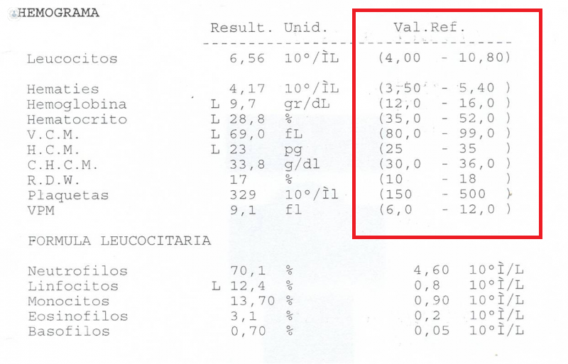